霜类演示入库清单
2026-11-07 · 4 段用户素材，均已由用户确认是初瑞雪本人。
产品动作基于原片抽帧序列整理，时点近似。机器转写存在错词，原声与语气尚未听审；4 条人物候选均不进入已核实话术匹配。
| 来源 | 产品专属 | 品类 | 初瑞雪通用表现 |
|---|---|---|---|
| B5面霜/4.mp4 78.60 秒 | 新增 B5面霜：开罐、多区布膏、分区推匀与收罐 同款包装及实际动作来自本片；名称按用户目录，未合并到已有其他产品。 | 新增 罐装面霜：多区布膏与释放双手后的补匀 按相容结构和用法提取可复用路线。 | 待核查候选 说明搭配产品 身份已由用户确认；视觉动作已整理，机器台词、语气和对应关系未听审，不进入默认编排。 |
| 水光霜/8.mp4 97.59 秒 | 新增 水光霜：顶面取霜、局部推薄与按压出料 同款包装及实际动作来自本片；名称按用户目录，未合并到已有其他产品。 | 新增 顶部按压出料面霜：承接取霜与按压展示 按相容结构和用法提取可复用路线。 | 待核查候选 引导购买 身份已由用户确认；视觉动作已整理，机器台词、语气和对应关系未听审，不进入默认编排。 |
| 辛等等樱桃面霜/3.mp4 20.92 秒 | 新增 辛等等樱桃面霜：举近、转向与脸侧持品 同款包装及实际动作来自本片；名称按用户目录，未合并到已有其他产品。 | 已有相近动作，不重复新增 持品、转向、展示已有通用路线，本轮保留在同款专属记录。 | 待核查候选 表达个人推荐 身份已由用户确认；视觉动作已整理，机器台词、语气和对应关系未听审，不进入默认编排。 |
| 银霜/1.mp4 38.29 秒 | 不适用 没有展示容器、取霜或使用过程，不能仅凭口播或文件夹名称补产品演示。 | 不适用 没有实际产品操作。 | 待核查候选 强调产品独有性 身份已由用户确认；视觉动作已整理，机器台词、语气和对应关系未听审，不进入默认编排。 |
产品专属演示 · 7 个动作单元
B5面霜：开罐、多区布膏、分区推匀与收罐
原片同款的完整演示路线，包含展示、开盖、多区接触转移、分区推薄、回盖放低和离手看肤面。
闭罐举至脸侧并指示罐身 约 0.0–1.5 秒
起点条件：罐盖闭合；一手持罐，另一手可指示。
观察动作：将闭合白罐保持在脸侧，空闲手食指指向罐身正面，随后收回并降低罐身。
衔接与结束：指示手转为握盖，持罐手保持承托。 闭罐移至胸前，双手具备开盖条件。
可见结果：看清同一罐包装与接下来的操作起点。
适用限制：不凭空露出膏体；不遮住整张脸。
编排参考：闭合罐举到脸侧，空闲手指一下罐身后收回，随后将罐移到胸前。
旋开外盖并露出罐内膏霜 约 1.5–5.0 秒
起点条件：同款旋盖罐处于闭合状态；双手可协作。
观察动作：一手承托罐底，另一手握外盖旋转后抬离；外盖降到画面下方，开口罐随后略抬起朝镜头。原片没有独立内片移除过程。
衔接与结束：露出开口后，空闲手转向罐内取霜。 一手持开口罐；盖子在画外，其实际落点未见。
可见结果：可见罐口和膏面，连接后续取霜。
适用限制：不加出未见的内盖；复用时按当前真实支撑面明确盖子落点，不声称原片已拍到落桌。
编排参考：承托罐身，旋开并分离外盖，按当前真实台面放妥盖子，再将开口略朝向镜头。
逐次取霜，在双颊、额头、鼻外部和下巴布膏 约 5.0–15.5 秒
起点条件：罐已打开；一手持罐，另一手指腹可取霜；当前产品允许用于相应面部部位。
观察动作：指腹从罐内取膏，先落在画面右侧面颊，再补取点到另一颊；继续补取，依次在额头、鼻部外侧和下巴留下浅色膏痕。先前的膏痕在未推开前保留。
衔接与结束：最后一处布膏后，活动手转到面颊开始推开。 多个部位有可见膏痕；罐仍由另一手承托。
可见结果：把取霜、接触转移和多区布膏连成可追踪过程，不宣称即时功效。
适用限制：不让未接触部位自行变白或消膏；不强制其他产品复用原片用量。
编排参考：一手持开罐，另一手按实际需要补取少量面霜，依次在双颊、额头和下巴点涂，未推开的膏痕保持连续。
持罐分区推开，保留未处理区域的膏痕 约 16.5–36.0 秒
起点条件：脸部已有分区膏痕；一手持开罐，另一手可涂抹。
观察动作：先在画面右侧面颊推开，再移向额头和另一侧面颊，随后带到鼻侧外部、下巴。白色膏痕随实际手部接触逐渐变薄；期间持罐手持续承托。
衔接与结束：推开主要膏痕后，活动手离脸并向画面下方转移。 主要膏痕变薄，罐仍在手中；不是取用结束后瞬间全脸换肤。
可见结果：展示多部位分段推开的可见过程。
适用限制：原片有手掌经过闭合眼周，不据此认定眼部适用；不将整段等比挤压进很短片段。
编排参考：从一侧面颊开始分区推开，再照顾额头、另一侧面颊与下巴；只有实际接触到的区域逐渐推薄。
盖回后展示，再将罐放到画外 约 36.5–45.0 秒
起点条件：罐和此前分离的盖仍可取得；主要涂抹已完成。
观察动作：罐降低到画面下方，随后可见浅紫盖已盖回；闭罐在胸前短暂展示，再向画面下方移出。回盖过程局部在画外，无法确认每个旋转动作。
衔接与结束：罐离开画面后，双手可继续整理已涂部位。 容器不再占用手；原片未显示最终承托位置。
可见结果：演示结束持物任务后释放手部。
适用限制：不写盖子瞬间出现；复用时明确可用台面和实际放置，不虚构原片落桌细节。
编排参考：取回原先放好的盖子，盖回后将罐放到当前可用台面，释放双手继续完成余下动作。
放下容器后补匀残留，再离手 约 45.5–62.5 秒
起点条件：容器已移出手部；脸上仍有正在推开的产品。
观察动作：手部重新接触面颊、下巴和额头，切换单手与双手补匀残留，随后逐渐离脸。原片的扫过眼周部分不作为通用品类推荐。
衔接与结束：离手后进入看镜头或侧转展示。 双手可自然回落，已涂部位保持实际薄层状态。
可见结果：避免一手长期锁定持品，保留真实操作后的收势。
适用限制：不无依据再次取膏；不把摩擦直接写成吸收完成或功效证明。
编排参考：放妥面霜后，用空出的手补匀面颊、额头与下巴的残留，随后离脸并自然收手。
离手后略侧转靠近，展示当前肤面 约 64.0–71.5 秒
起点条件：已完成前述涂抹；镜头和照明基本保持。
观察动作：活动手离开下颌附近，头部略侧转并靠近镜头，短暂露出一侧面颊，再恢复交流。
衔接与结束：由肤面展示回到正常说话姿态。 脸部可见，手不遮挡。
可见结果：看清当时的肤面与反光，不证明护肤功效或对比结果。
适用限制：不通过加亮曝光、更换皮肤或改变脸型夸大结果。
编排参考：涂抹后离手，保持原有光线，略侧转让镜头看清当前面颊状态，再回到交流。
查看关键帧证据

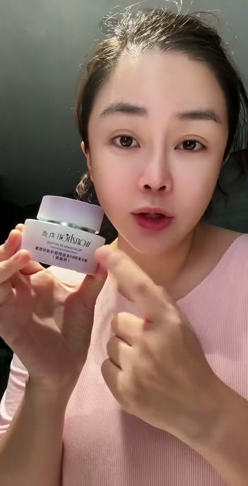

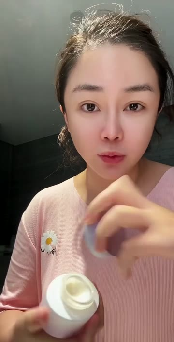

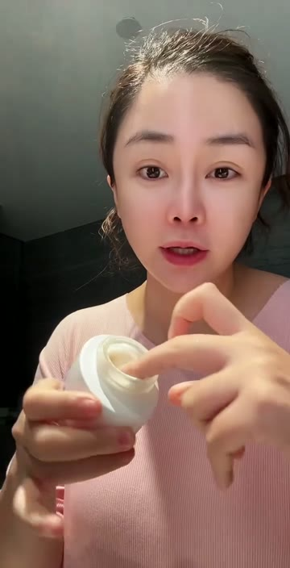


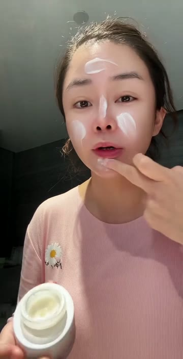

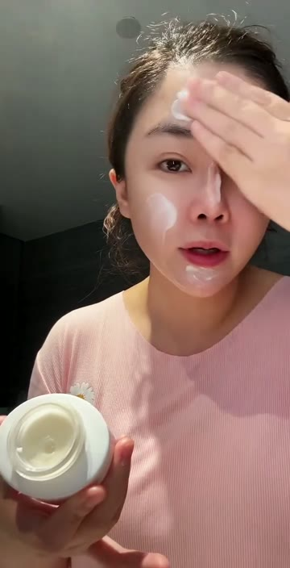


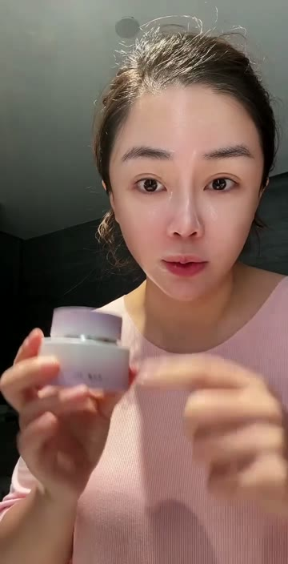

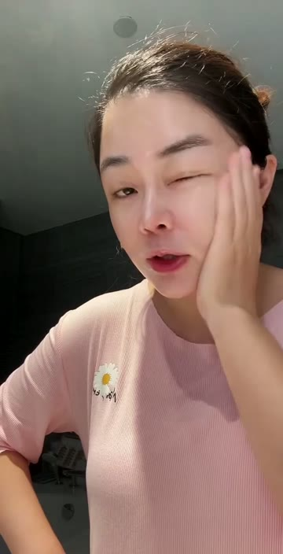

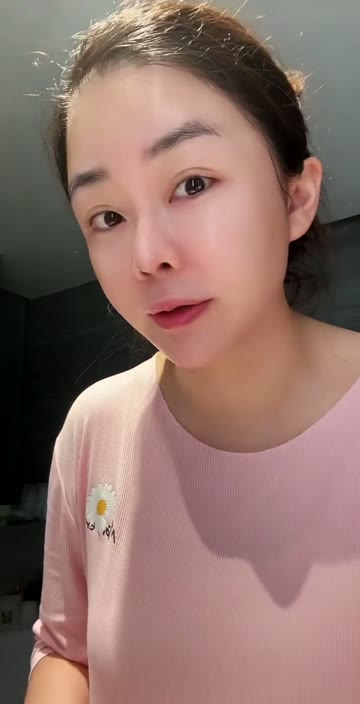
产品专属演示 · 5 个动作单元
水光霜：顶面取霜、局部推薄与按压出料
从顶面已有膏体取用、面颊局部推薄、放低容器后补匀；尾段另有顶面按压并露出新增膏体的包装演示。
从顶面已有膏体取霜，再接触面颊 约 0.0–3.5 秒
起点条件：粉色顶面已有可见浅色膏体；一手持容器，另一手可取用。
观察动作：将顶面朝镜头保持可见，指腹抹取其上已有膏体，然后接触画面右侧面颊并开始推开。首帧出料已完成，不能把开头写成从零开始挤出。
衔接与结束：取霜手转为局部涂抹，容器仍由另一手持住。 少量膏体转移到面颊，顶面留有残余。
可见结果：建立顶面膏体到指腹、再到皮肤的真实转移。
适用限制：不把按压顶面当作可旋开的普通盖；不忽略首帧已有膏。
编排参考：承接顶面已有的面霜，用指腹抹取后落到面颊，再从落点逐步推开。
少量补取后沿面颊、鼻侧外部和下巴推薄 约 3.5–30.0 秒
起点条件：顶面可以继续承接/取用面霜；面部已有少量产品。
观察动作：活动手回到顶面补取，再以指腹沿同侧面颊、鼻侧外部与下巴分段推开；中间有短暂离手、看镜头及再次接触。
衔接与结束：处理当前局部后停手或转移到其他已涂区域。 已接触部位形成较薄、带反光的可见层。
可见结果：提供与大块布膏不同的少量多次、局部推薄路线。
适用限制：不根据反光推断吸收、配方或疗效；不要把原片多次动作机械复制成固定次数。
编排参考：每次只取当前需要的量，先在一侧面颊推开，再根据残留照顾鼻侧外部和下巴，穿插短暂停手交流。
容器放低后，单手和双手交替补匀 约 32.0–65.5 秒
起点条件：容器已降低到画外；面部保持之前已涂产品。
观察动作：空出持物手后，在面颊、额头和下巴切换单手与双手推开，期间可以停下继续交流。原片有闭眼及手经过眼周，不扩大为所有面霜可上眼。
衔接与结束：补匀后离脸，接续当前肤面展示或口播。 容器不持续占手；面部保持已经操作后的状态。
可见结果：补足释放双手后的自然使用与停手节奏。
适用限制：不编造新取料；眼部适用须另有当前产品依据。
编排参考：放稳容器后，双手按当前残留补匀面颊、额头和下巴，完成后离手交流。
停手、侧转，看清当前面颊反光 约 55.0–56.5 秒；约 67.5–72.5 秒（两次独立出现）
起点条件：相关面颊已实际接触涂抹；原光线不变。
观察动作：停止遮挡面颊的涂抹，略侧转并靠近，让当前皮肤反光被看见，再回到交流。所列两段是原片不同出现，不能拼成一条无间断观察。
衔接与结束：回正或自然降低手部。 当前已涂部位无遮挡。
可见结果：展示现场可见状态，不作前后对比或功效认证。
适用限制：不让未涂处同步变化；不新增滤镜和提亮。
编排参考：涂抹后短暂离手，保持同一光线，略侧转展示当前面颊，再恢复说话姿态。
举近顶部，双指按压后露出新增膏体 约 88.5–91.5 秒
起点条件：确认是原片同样的顶面按压出料容器；容器竖直，手可稳定承托。
观察动作：将粉色顶面举近并朝向镜头，手指接触顶面两侧后向下按压，随后抬手；中央浅色膏体由小点变为较明显膏团。只记录可见出料变化，不推定内部真空结构和精确出料量。
衔接与结束：抬手让顶面膏体清楚可见，之后可按当前任务取用或收回容器。 顶面中央新增膏体，瓶身仍完整未拆开。
可见结果：展示该包装的按压出料与顶面承接。
适用限制：不旋拧拆开顶面；不凭空增加泵嘴；不写固定按压次数或克数。
编排参考：持稳同款按压容器，将顶面朝向镜头，手指按压后抬起，让中央真实挤出的面霜留在承接面上。
查看关键帧证据

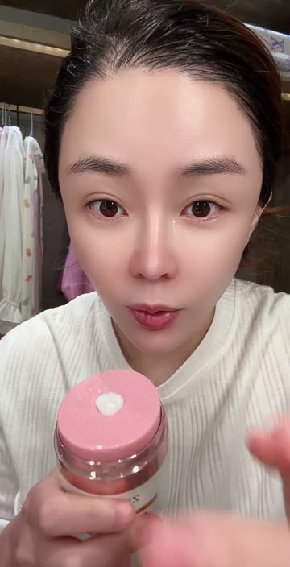


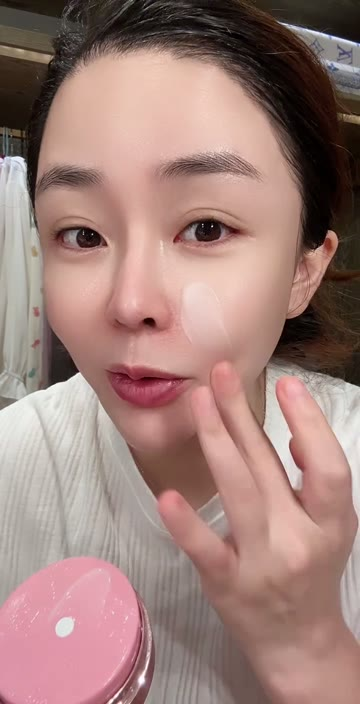

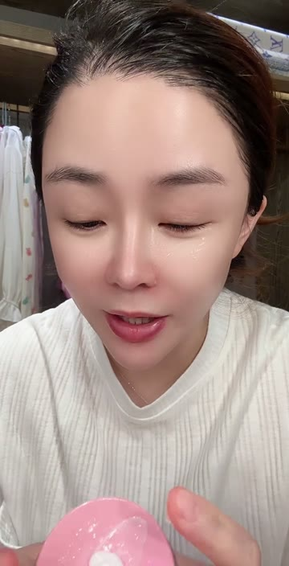

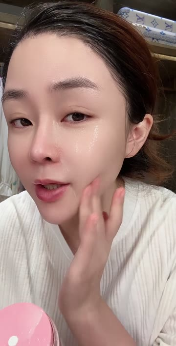

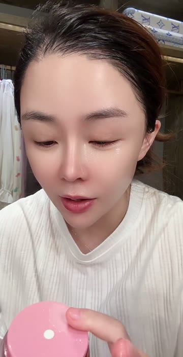

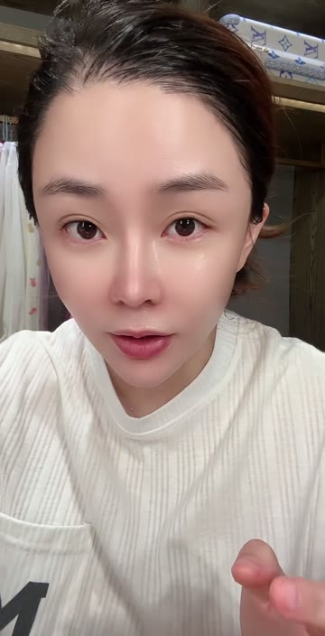

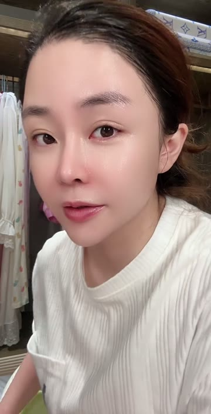

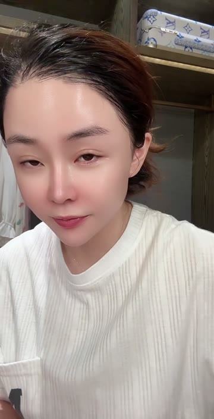

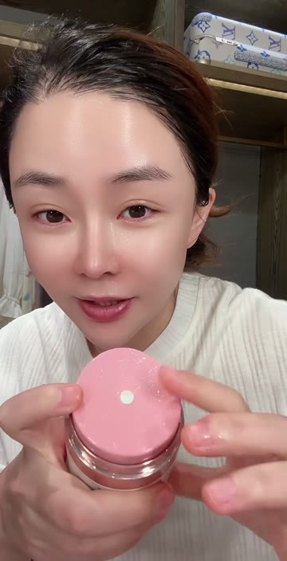

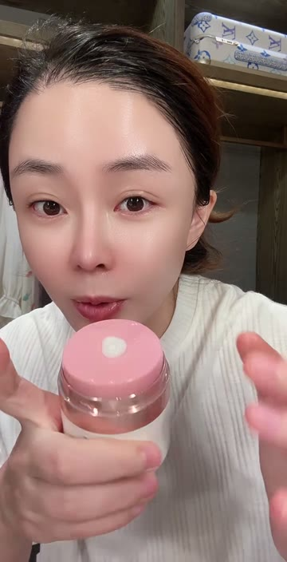

产品专属演示 · 3 个动作单元
辛等等樱桃面霜：举近、转向与脸侧持品
纯展示同款透明外罩粉色包装，包含举近露顶、视线看物后转向和脸侧持稳；没有开盖、取膏或上脸。
从画外取出，脸侧举近并露出顶部 约 3.0–6.5 秒
起点条件：同款透明外罩粉色容器可拿取；一手空闲。
观察动作：先看向画外产品，将容器举至脸侧，略倾使顶部和外罩可见，再收至自然展示距离。
衔接与结束：保持握持进入包装转向。 容器在脸侧，顶部结构和外罩可见。
可见结果：介绍同款包装外形。
适用限制：本片没有开启动作，不编开盖或取膏。
编排参考：从画外拿起同款面霜，举至脸侧略倾展示顶部，再回到自然持品距离。
看一眼瓶身，转向展示图案与正面 约 6.5–11.0 秒
起点条件：一手持透明外罩粉色容器。
观察动作：视线短暂落向容器，手腕转动瓶身，交替露出侧面、顶部和带图案的正面，再回看镜头。
衔接与结束：正面朝向镜头后减少转动。 容器正面在脸侧可见。
可见结果：看清真实包装，不要求无法辨认的小字。
适用限制：不任意改标签、图案、内部件数量。
编排参考：看一眼手中面霜，转到包装正面并停稳，再把目光带回镜头。
脸侧正面持品，指腹扶稳下缘 约 12.0–19.0 秒
起点条件：容器正面已朝向镜头；手可自然扶住瓶身与下缘。
观察动作：把容器停在脸侧，指腹扶稳下缘及瓶身，随讲话做有限的距离和角度调整；接近结尾将产品移出画面。
衔接与结束：从持品展示回到无持物交流。 产品最后离开镜头，脸部保持可见。
可见结果：纯口播展示路线，不引入使用教程。
适用限制：不把托瓶手指误写成向下购买指示；不新增上脸动作。
编排参考：在脸侧自然持稳面霜，保持正面可见，随交流调整角度，完成后放回。
查看关键帧证据

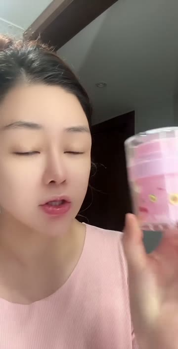

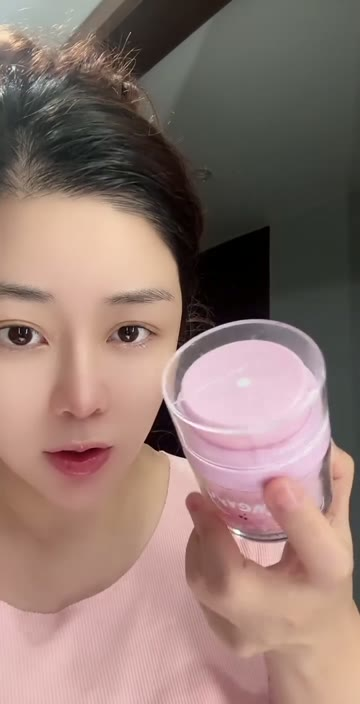

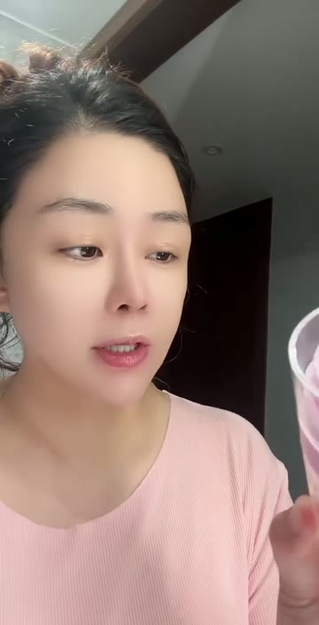

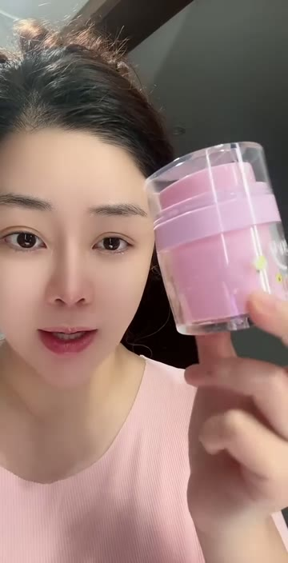

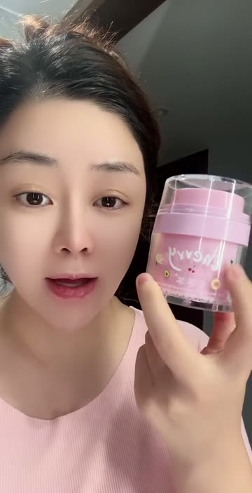

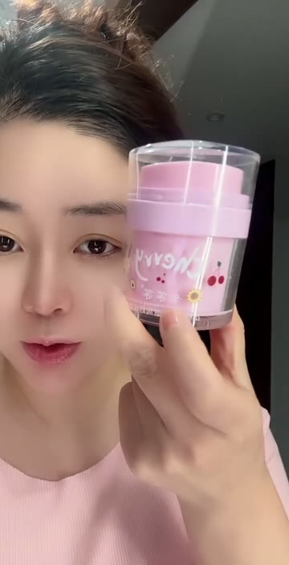
品类演示 · 3 个动作单元
罐装面霜：多区布膏与释放双手后的补匀
补足已有局部用霜演示：先多区布膏，再逐区推薄；容器放稳后释放双手继续补匀。顺序可按首帧、时长和真实用法重新编排。
逐次取霜，在双颊、额头、鼻外部和下巴布膏 约 5.0–15.5 秒
起点条件：罐已打开；一手持罐，另一手指腹可取霜；当前产品允许用于相应面部部位。
观察动作：指腹从罐内取膏，先落在画面右侧面颊，再补取点到另一颊；继续补取，依次在额头、鼻部外侧和下巴留下浅色膏痕。先前的膏痕在未推开前保留。
衔接与结束：最后一处布膏后，活动手转到面颊开始推开。 多个部位有可见膏痕；罐仍由另一手承托。
可见结果：把取霜、接触转移和多区布膏连成可追踪过程，不宣称即时功效。
适用限制：不让未接触部位自行变白或消膏；不强制其他产品复用原片用量。
编排参考：一手持开罐，另一手按实际需要补取少量面霜，依次在双颊、额头和下巴点涂，未推开的膏痕保持连续。
持罐分区推开，保留未处理区域的膏痕 约 16.5–36.0 秒
起点条件：脸部已有分区膏痕；一手持开罐，另一手可涂抹。
观察动作：先在画面右侧面颊推开，再移向额头和另一侧面颊，随后带到鼻侧外部、下巴。白色膏痕随实际手部接触逐渐变薄；期间持罐手持续承托。
衔接与结束：推开主要膏痕后，活动手离脸并向画面下方转移。 主要膏痕变薄，罐仍在手中；不是取用结束后瞬间全脸换肤。
可见结果：展示多部位分段推开的可见过程。
适用限制：原片有手掌经过闭合眼周，不据此认定眼部适用；不将整段等比挤压进很短片段。
编排参考：从一侧面颊开始分区推开，再照顾额头、另一侧面颊与下巴；只有实际接触到的区域逐渐推薄。
放下容器后补匀残留，再离手 约 45.5–62.5 秒
起点条件：容器已移出手部；脸上仍有正在推开的产品。
观察动作：手部重新接触面颊、下巴和额头，切换单手与双手补匀残留，随后逐渐离脸。原片的扫过眼周部分不作为通用品类推荐。
衔接与结束：离手后进入看镜头或侧转展示。 双手可自然回落，已涂部位保持实际薄层状态。
可见结果：避免一手长期锁定持品，保留真实操作后的收势。
适用限制：不无依据再次取膏；不把摩擦直接写成吸收完成或功效证明。
编排参考：放妥面霜后，用空出的手补匀面颊、额头与下巴的残留，随后离脸并自然收手。
查看关键帧证据


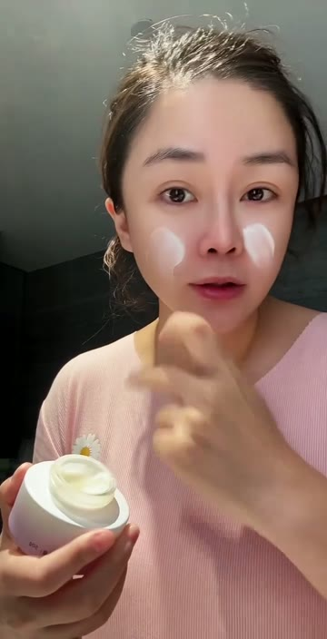

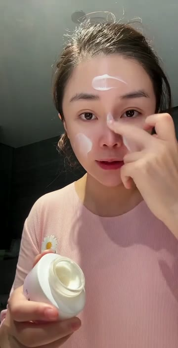


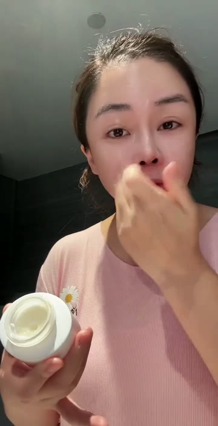


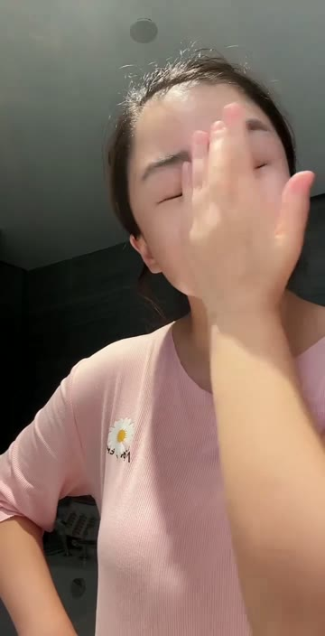
品类演示 · 2 个动作单元
顶部按压出料面霜：承接取霜与按压展示
仅适合已确认同类顶部承接出料结构：区分首帧已有料直接取用，与从较少残料按压新增膏体；不迁移为普通旋盖罐操作。
从顶面已有膏体取霜，再接触面颊 约 0.0–3.5 秒
起点条件：粉色顶面已有可见浅色膏体；一手持容器，另一手可取用。
观察动作：将顶面朝镜头保持可见，指腹抹取其上已有膏体，然后接触画面右侧面颊并开始推开。首帧出料已完成，不能把开头写成从零开始挤出。
衔接与结束：取霜手转为局部涂抹，容器仍由另一手持住。 少量膏体转移到面颊，顶面留有残余。
可见结果：建立顶面膏体到指腹、再到皮肤的真实转移。
适用限制：不把按压顶面当作可旋开的普通盖；不忽略首帧已有膏。
编排参考：承接顶面已有的面霜，用指腹抹取后落到面颊，再从落点逐步推开。
举近顶部，双指按压后露出新增膏体 约 88.5–91.5 秒
起点条件：确认是当前产品具有顶部承接、中央出料的按压结构；容器竖直，手可稳定承托。
观察动作：将粉色顶面举近并朝向镜头，手指接触顶面两侧后向下按压，随后抬手；中央浅色膏体由小点变为较明显膏团。只记录可见出料变化，不推定内部真空结构和精确出料量。
衔接与结束：抬手让顶面膏体清楚可见，之后可按当前任务取用或收回容器。 顶面中央新增膏体，瓶身仍完整未拆开。
可见结果：展示该包装的按压出料与顶面承接。
适用限制：不旋拧拆开顶面；不凭空增加泵嘴；不写固定按压次数或克数。
编排参考：持稳已确认结构相容的按压容器，将顶面朝向镜头，手指按压后抬起，让中央真实挤出的面霜留在承接面上。
查看关键帧证据


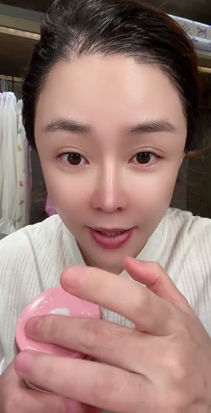


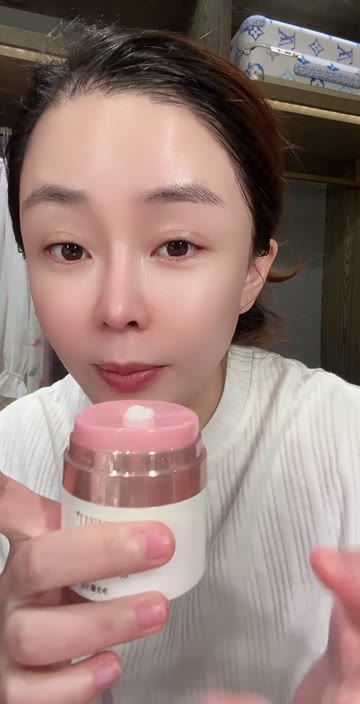
完整原片与关键帧已随库保存；无付费生成、无第三方上传。20 个为专属与品类中的检索单元数，部分共用同一段原片证据。